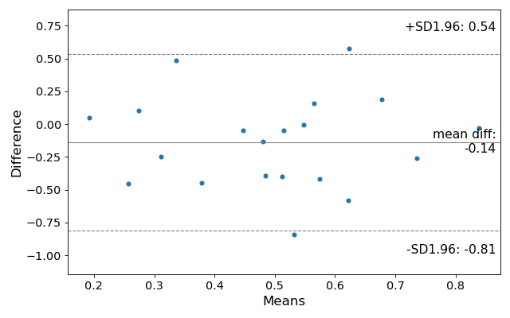

statsmodels.graphics.agreement.mean_diff_plot¶
-
statsmodels.graphics.agreement.mean_diff_plot(m1, m2, sd_limit=1.96, ax=None, scatter_kwds=None, mean_line_kwds=None, limit_lines_kwds=None)[source]¶ Tukey’s Mean Difference Plot.
Tukey’s Mean Difference Plot (also known as a Bland-Altman plot) is a graphical method to analyze the differences between two methods of measurement. The mean of the measures is plotted against their difference.
For more information see https://en.wikipedia.org/wiki/Bland-Altman_plot
- Parameters
- m1, m2: pandas Series or array-like
- sd_limitfloat, default 1.96
The limit of agreements expressed in terms of the standard deviation of the differences. If md is the mean of the differences, and sd is the standard deviation of those differences, then the limits of agreement that will be plotted will be
md - sd_limit * sd, md + sd_limit * sd
The default of 1.96 will produce 95% confidence intervals for the means of the differences. If sd_limit = 0, no limits will be plotted, and the ylimit of the plot defaults to 3 standard deviatons on either side of the mean.
- ax: matplotlib AxesSubplot instance, optional
If ax is None, then a figure is created. If an axis instance is given, the mean difference plot is drawn on the axis.
- scatter_kwargs: keywords
Options to to style the scatter plot. Accepts any keywords for the matplotlib Axes.scatter plotting method
- mean_line_kwds: keywords
Options to to style the scatter plot. Accepts any keywords for the matplotlib Axes.axhline plotting method
- limit_lines_kwds: keywords
Options to to style the scatter plot. Accepts any keywords for the matplotlib Axes.axhline plotting method
- Returns
- figmatplotlib Figure
If ax is None, the created figure. Otherwise the figure to which ax is connected.
References
Bland JM, Altman DG (1986). “Statistical methods for assessing agreement between two methods of clinical measurement”
Examples
Load relevant libraries.
>>> import statsmodels.api as sm >>> import numpy as np >>> import matplotlib.pyplot as plt
Making a mean difference plot.
>>> # Seed the random number generator. >>> # This ensures that the results below are reproducible. >>> np.random.seed(9999) >>> m1 = np.random.random(20) >>> m2 = np.random.random(20) >>> f, ax = plt.subplots(1, figsize = (8,5)) >>> sm.graphics.mean_diff_plot(m1, m2, ax = ax) >>> plt.show()
(Source code, png, hires.png, pdf)

{kind=link}
{kind=link}